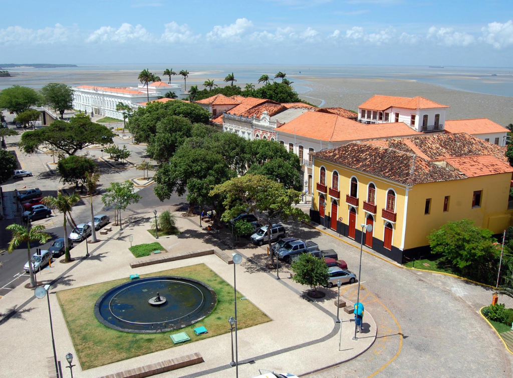

Maranhão é um estado localizado na Região Nordeste do Brasil. Sua capital é São Luís, conhecida por seu centro histórico, pela cultura popular e pelas festas tradicionais. O Maranhão possui características naturais variadas, com áreas de litoral, florestas, rios e regiões de cerrado. O clima é predominantemente quente e úmido. A economia do estado é baseada na agricultura, na pecuária, no comércio, na indústria e no turismo. Um dos principais pontos turísticos do estado é o Parque Nacional dos Lençóis Maranhenses, famoso pelas dunas de areia branca e lagoas de água cristalina. Outro destaque é o centro histórico de São Luís, reconhecido por seus casarões antigos e azulejos portugueses.
